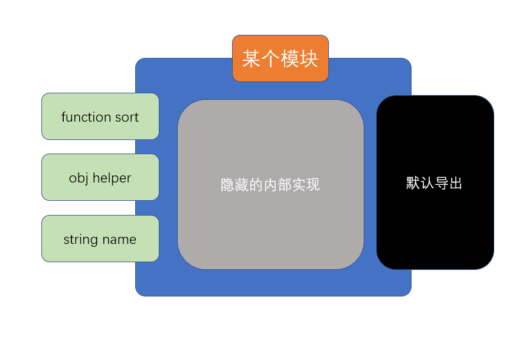

ES6模块化简介
ECMA组织参考了众多社区模块化标准，终于在2015年，随着ES6发布了官方的模块化标准，后成为ES6模块化
ES6模块化具有以下的特点
- 使用依赖预声明的方式导入模块
- 依赖延迟声明
- 优点：某些时候可以提高效率
- 缺点：无法在一开始确定模块依赖关系（比较模糊）
- 依赖预声明
- 优点：在一开始可以确定模块依赖关系
- 缺点：某些时候效率较低
- 依赖延迟声明
- 灵活的多种导入导出方式
- 规范的路径表示法：所有路径必须以./或../开头
基本导入导出
模块的引入
注意：这一部分非模块化标准
目前，浏览器使用以下方式引入一个ES6模块文件
1 | <script src="入口文件" type="module"> |
模块的基本导出和导入
ES6中的模块导入导出分为两种：
- 基本导入导出
- 默认导入导出

基本导出
类似于 exports.xxx = xxxx
基本导出可以有多个，每个必须有名称
基本导出的语法如下：
1 | export 声明表达式 |
或
1 | export {具名符号} |
由于基本导出必须具有名称，所以要求导出内容必须跟上声明表达式或具名符号
基本导入
由于使用的是依赖预加载，因此，导入任何其他模块，导入代码必须放置到所有代码之前
对于基本导出，如果要进行导入，使用下面的代码
1 | import {导入的符号列表} from "模块路径" |
注意以下细节：
- 导入时，可以通过关键字
as对导入的符号进行重命名 - 导入时使用的符号是常量，不可修改
- 可以使用*号导入所有的基本导出，形成一个对象
默认导入导出
默认导出
每个模块，除了允许有多个基本导出之外，还允许有一个默认导出
默认导出类似于CommonJS中的module.exports，由于只有一个，因此无需具名
具体的语法是
1 | export default 默认导出的数据 |
或
1 | export {默认导出的数据 as default} |
由于每个模块仅允许有一个默认导出，因此，每个模块不能出现多个默认导出语句
默认导入
需要想要导入一个模块的默认导出，需要使用下面的语法
1 | import 接收变量名 from "模块路径" |
类似于CommonJS中的
1 | var 接收变量名 = require("模块路径") |
由于默认导入时变量名是自行定义的，因此没有别名一说
如果希望同时导入某个模块的默认导出和基本导出，可以使用下面的语法
1 | import 接收默认导出的变量, {接收基本导出的变量} from "模块路径" |
注：如果使用*号，会将所有基本导出和默认导出聚合到一个对象中，默认导出会作为属性default存在
ES6模块化的其他细节
- 尽量导出不可变值
当导出一个内容时，尽量保证该内容是不可变的（大部分情况都是如此）
因为，虽然导入后，无法更改导入内容，但是在导入的模块内部却有可能发生更改，这将导致一些无法预料的事情发生
- 可以使用无绑定的导入用于执行一些初始化代码
如果我们只是想执行模块中的一些代码，而不需要导入它的任何内容，可以使用无绑定的导入：
1 | import "模块路径" |
- 可以使用绑定再导出，来重新导出来自另一个模块的内容
有的时候，我们可能需要用一个模块封装多个模块，然后有选择的将多个模块的内容分别导出，可以使用下面的语法轻松完成
1 | export {绑定的标识符} from "模块路径" |